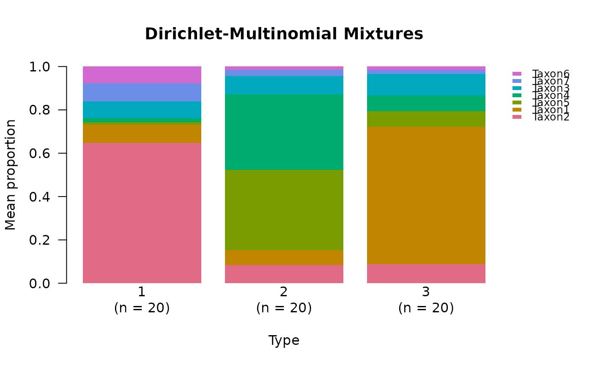
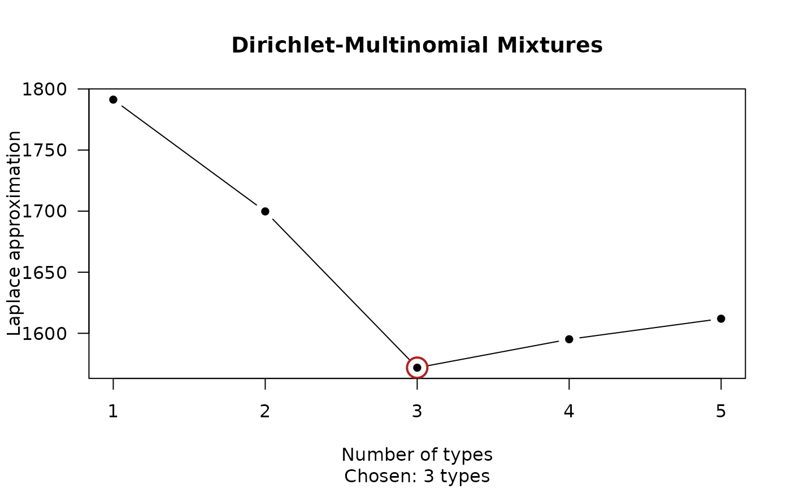

Clusters samples into community types with the Dirichlet-multinomial mixture (DMM) model of Holmes, Harris & Quince (2012): each type is a Dirichlet distribution of compositions, and each sample's counts are a multinomial draw from a composition drawn from its type. The model is fitted by expectation maximization (EM) for each number of types, and the number of types is chosen by the Laplace approximation to the model evidence.
Arguments
- counts
A table of raw counts (whole numbers), such as a matrix, a
dgCMatrixor a phyloseq object. Samples are rows unlessmargin = 2.- n_types
The numbers of types to fit (each from 1 to the number of samples); a single value fixes it. Default
1:7, cut to1:nfor fewer than 7 samples.- criterion
Which criterion chooses the number of types, the smallest value winning:
"laplace"(the default), the negative log of the Laplace approximation to the model evidence, as in Holmes et al. (2012);"aic"; or"bic". All three are reported in theselectionattribute. See Details.- n_starts
The number of random starts for each number of types; the fit with the largest posterior is kept. Default
1.- max_iters
The most EM iterations for each start. Default
1000.- tol
EM stops when the negative log posterior changes by less than
toltimes its value. Default1e-10.- eta, nu
The shape and rate of the Gamma prior on every Dirichlet parameter. Defaults
0.1and0.1, as in DirichletMultinomial.- seed
An integer seed for the random starts. The same
seedgives the same result. R's random number generator is not used. Default0.- margin
If your samples are in the table's rows, set to
1L(the default). If they are in columns, set to2L.- cpus
How many parallel processing threads to use. Results are the same for any number. Default: all available cores.
Value
A data frame of class
c("ecodive_dmm", "ecodive_types", "data.frame"), one row per sample
(see ecodive_types), with columns sample, type (a factor, levels
"1", "2", ... in decreasing weight) and probability (the posterior
probability of the assigned type). Its attributes:
types: a data frame, one row per type, withtype,n_samples,top_feature(the feature of largest Dirichlet mean),weight(\(\pi_k\)) andprecision(\(A_k\)).profiles: the types \(\times\) features matrix of Dirichlet means, \(\alpha_{kj} / A_k\).selection: a data frame, one row per number of types, withn_types,laplace,aic,bic,nle,n_iters(EM iterations),convergedandselected.posterior: the samples \(\times\) types matrix of posterior probabilities \(z_{ik}\).alpha: the types \(\times\) features matrix of Dirichlet parameters.criterion: the criterion that chose the number of types.method:"dmm".
plot() draws the types' profiles or the selection (see
plot.ecodive_types()); its title is "Dirichlet-Multinomial Mixtures".
Details
The model (Holmes et al. 2012). Type \(k\) has weight \(\pi_k\)
and Dirichlet parameters \(\alpha_{k1}, \dots, \alpha_{kS}\), with sum
\(A_k\), its precision: large values mean the type's samples have
similar compositions, small values that they vary widely. The
probability of sample \(i\)'s counts \(x_{i1}, \dots, x_{iS}\), with
total \(J_i\), under type \(k\) is
$$p(x_i | \alpha_k) = \frac{J_i!}{\prod_j x_{ij}!}
\frac{\Gamma(A_k)}{\Gamma(A_k + J_i)}
\prod_j \frac{\Gamma(\alpha_{kj} + x_{ij})}{\Gamma(\alpha_{kj})}.$$
Every \(\alpha_{kj}\) has a Gamma(eta, nu) prior (shape and rate),
and is fitted on the log scale, \(\lambda_{kj} = \log \alpha_{kj}\).
Fitting. Each number of types starts from k-means clusters of the
samples' proportions (the best of 10 runs of k-means++ seeding and Lloyd's
iterations, drawn from the seed; one cluster for one type), with each
type's \(\alpha\) from its cluster's moments. EM then alternates: each
sample's posterior probability of each type, \(z_{ik} \propto \pi_k
p(x_i | \alpha_k)\); then for each type the \(\lambda_k\) that maximise
\(\sum_i z_{ik} \log p(x_i | \alpha_k)\) plus the log prior, by
Newton's method, and \(\pi_k = \frac1n \sum_i z_{ik}\). It stops when
the negative log posterior changes by less than tol times its value.
With n_starts above 1, k-means starts again from the next seeds, and
the fit with the smallest negative log posterior is kept. Each sample is
assigned to its most probable type. Types are numbered by decreasing
weight.
Choosing the number of types. The selection attribute reports, for
each number of types \(K\), with \(M = KS + K - 1\) parameters:
nle: the negative log posterior at the fit, \(-\log p(X | \hat\theta) - \log p(\hat\theta)\), including the multinomial coefficients and the prior's constants.laplace: the negative log of the Laplace approximation to the evidence, \(\mathrm{nle} + \frac12 \log |H| - \frac M2 \log 2\pi\), where \(H\) is the Hessian of the negative log posterior: one block per type, in \(\lambda_k\), and the block of the multinomial in the weights.aic: \(\mathrm{nle} + M\), andbic: \(\mathrm{nle} + \frac M2 \log n\). Both are on the scale ofnle, half the usual AIC and BIC, as DirichletMultinomial reports them.
The \(K\) with the smallest value of criterion is chosen. Holmes et al.
choose by the Laplace approximation, and argue that AIC and BIC can mislead
for these models.
Cost. Each EM iteration takes time proportional to the number of non-zero counts times the number of types, so sparse tables stay cheap. The Hessian of each type is a diagonal plus a rank-one matrix, so Newton steps and \(\log|H|\) need no \(S \times S\) matrix.
Counts. The model is for raw counts: the multinomial step accounts for each sample's sequencing depth. Proportions, rarefied averages or other scaled values give a meaningless fit, and a warning. Aggregate to genus (or another rank) first to keep the number of features moderate, as Holmes et al. did.
Differences from DirichletMultinomial
The optimizer. DirichletMultinomial (from Holmes et al.'s code) uses GSL's BFGS for each type's \(\lambda\);
dmm()uses Newton's method, and stops EM bytol. From the same starting weights both reach the same fit: the same posteriors, weights and negative log posterior (dmm()'s slightly lower). Small Dirichlet parameters (well under 0.01), where the posterior is nearly flat, can differ by up to about 1%, as DirichletMultinomial stops further from the optimum.The start. DirichletMultinomial starts from soft k-means with its own random numbers, so with more than one type the two may reach different local optima. Try several
n_starts.The Laplace approximation matches DirichletMultinomial's for one type. For more types, its reported Hessian is not positive definite, and its intervals for the Dirichlet parameters are
NaN;dmm()uses the Hessian of the negative log posterior described above, solaplacediffers for more than one type, and may choose another number of types.nle,aicandbicmatch DirichletMultinomial'sgoodnessOfFit()(NLE,AIC,BIC).alphaandprofilesare types \(\times\) features, where DirichletMultinomial'sfitted()is features \(\times\) types. Types are ordered by decreasing weight.
Same names in other packages
dmm::dmm() (CRAN) fits dyadic mixed models, which are unrelated.
DirichletMultinomial calls this model dmn().
References
Holmes, I., Harris, K., & Quince, C. (2012). Dirichlet multinomial mixtures: generative models for microbial metagenomics. PLoS ONE, 7, e30126. doi:10.1371/journal.pone.0030126
Ding, T., & Schloss, P. D. (2014). Dynamics and associations of microbial community types across the human body. Nature, 509, 357-360. doi:10.1038/nature13178
Arthur, D., & Vassilvitskii, S. (2007). k-means++: the advantages of careful seeding. Proceedings of the 18th ACM-SIAM Symposium on Discrete Algorithms, 1027-1035.
See also
ecodive_types, plot.ecodive_types(), enterotype()
Other community types:
enterotype(),
valencia()
Examples
# Counts of 60 samples from three community types.
set.seed(1)
probs <- list(
c(40, 5, 5, 5, 5, 1, 1), c(5, 40, 5, 1, 1, 5, 5), c(5, 5, 5, 20, 20, 1, 1) )
counts <- t(sapply(rep(1:3, each = 20), function (k)
rmultinom(1, 500, rgamma(7, probs[[k]])) ))
colnames(counts) <- paste0('Taxon', 1:7)
dm <- dmm(counts, n_types = 1:5)
dm
#> # Dirichlet-Multinomial Mixtures
#> # 60 samples in 3 types, chosen by the Laplace approximation from 1 to 5
#> #
#> # Types:
#> type n_samples top_feature weight precision
#> 1 1 20 Taxon2 0.333 51
#> 2 2 20 Taxon5 0.333 47.9
#> 3 3 20 Taxon1 0.333 63.4
#> #
#> # Selection:
#> n_types laplace aic bic nle n_iters converged selected
#> 1 1 1790 1790 1800 1780 2 TRUE FALSE
#> 2 2 1700 1700 1710 1680 3 TRUE FALSE
#> 3 3 1570 1570 1590 1550 2 TRUE TRUE
#> 4 4 1600 1590 1630 1560 58 TRUE FALSE
#> 5 5 1610 1620 1660 1580 65 TRUE FALSE
#> #
#> # Samples: a data.frame: 60 × 3
#> sample type probability
#> <chr> <fct> <dbl>
#> 1 1 3 1
#> 2 2 3 1
#> 3 3 3 1
#> 4 4 3 1
#> 5 5 3 1
#> 6 6 3 1
#> 7 7 3 1
#> 8 8 3 1
#> 9 9 3 1
#> 10 10 3 1
#> # … 50 more rows
#> # Use print(x, n = ...) to see more rows
#> # Attributes: types, profiles, selection, posterior, alpha, criterion, method
table(dm$type, rep(1:3, each = 20))
#>
#> 1 2 3
#> 1 0 20 0
#> 2 0 0 20
#> 3 20 0 0
plot(dm)

plot(dm, 'selection')

# The types as groups in a test.
permanova(bray(counts), dm$type)
#> Permutational multivariate analysis of variance (PERMANOVA) of Bray-Curtis Dissimilarity
#>
#> F = 377.2, p = 0.001, z = 507.1
#> Permutations: 999 (free)
#>
#> Model R2 = 0.9298. Model tested as a whole:
#>
#> Df SumOfSqs R2 F Pr(>F)
#> Model 2 9.175 0.9298 377.2 0.001 ***
#> Residual 57 0.693 0.0702
#> Total 59 9.868 1.0000
#> ---
#> Signif. codes: 0 ‘***’ 0.001 ‘**’ 0.01 ‘*’ 0.05 ‘.’ 0.1 ‘ ’ 1